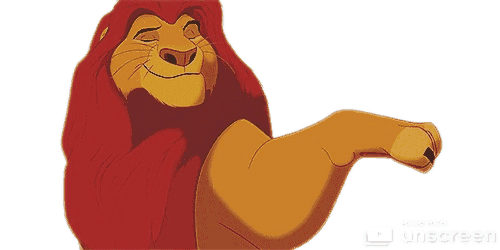
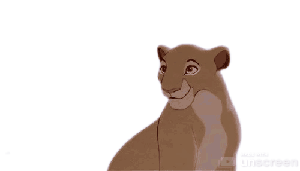
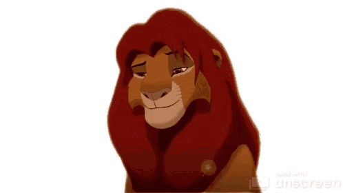
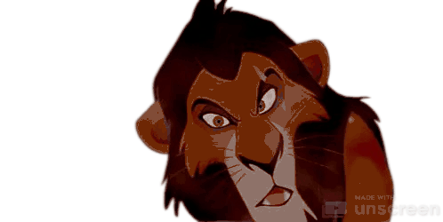
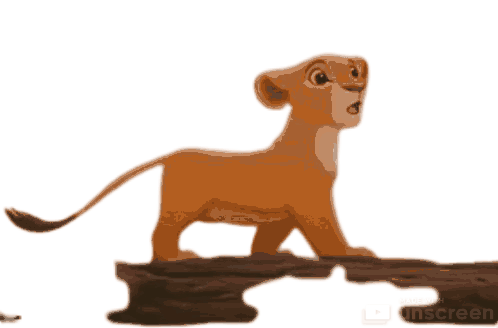
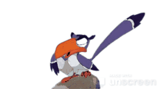
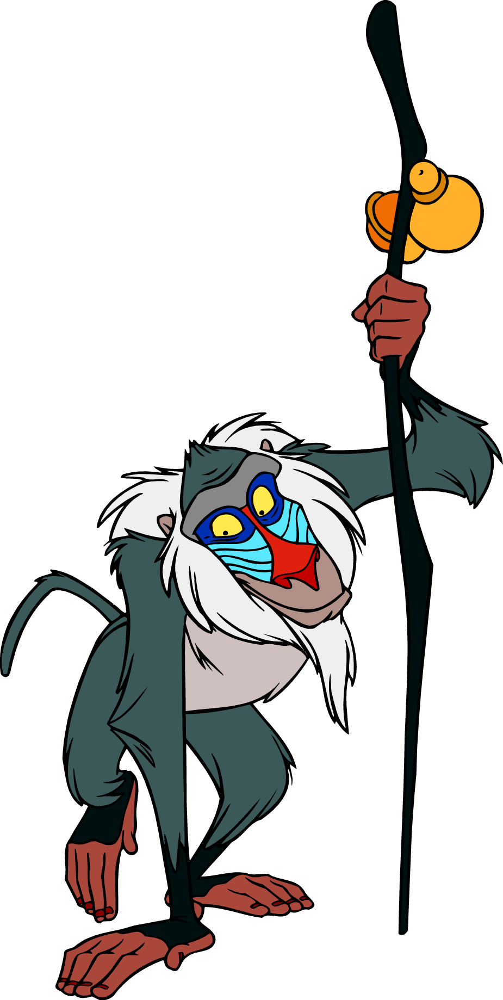
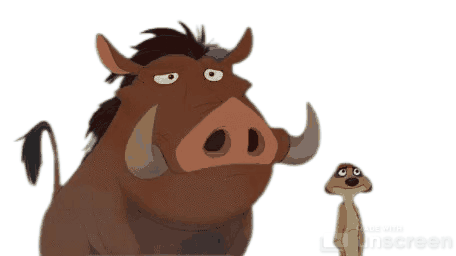

Mufasa is a major character in 1994 animated feature film, The Lion King. He was the king of the Pride Lands and the father of Simba. In the midst of his reign, Mufasa was killed by his envious brother, Scar, in an effort to steal the throne. After the birth of his son, Simba, Mufasa trained him to respect the Circle of Life and to take responsibility for his kingdom and subjects. While Simba was still a cub, Scar plotted against Mufasa and used a stampede to endanger Simba's life. After saving Simba from the stampede, Mufasa climbed up the side of a gorge, only to be thrown to his death by Scar. Simba found Mufasa's body after the stampede, and Scar convinced him that he was to blame for his father's death, which prompted him to flee the Pride Lands.
Sarabi is a female lion. She is the queen of Pride Rock who preceded Nala. She was the mate of Mufasa, with whom she had a son, Simba.
During Mufasa's reign, Sarabi served as his queen and the leader of his hunting party. However, when Mufasa and Simba purportedly died in a stampede, she was forced to serve Mufasa's younger brother, Scar, instead. Over the seasons, Scar's hyena minions took over the Pride Lands, and the kingdom fell into disrepair as a result. Eventually, Sarabi condemned Scar's poor leadership and helped a full-grown Simba overthrow him.
Simba is a male lion. He is the king of Pride Rock who succeeded Scar. He is the son of Mufasa and Sarabi, and the mate of Nala, with whom he has a cub. Simba was born the prince heir of Pride Rock. Growing up, he was taught by his father, Mufasa, to respect the Circle of Life and defend the animals of the Pride Lands. However, when he was still a cub, his uncle Scar murdered Mufasa, blamed Simba for the death, and convinced the cub to flee the kingdom.
Scar was a male lion. He was the king of Pride Rock who succeeded Mufasa and preceded Simba. He was the younger brother of Mufasa and the uncle of Simba.
In his youth, Scar was tasked with leading the Lion Guard, a legendary group of lions who defended the Circle of Life and protected the Pride Lands. As the group's leader, Scar was gifted with a powerful roar called the Roar of the Elders. Over time, his power and position led him to believe that he should be king instead of his elder brother, Mufasa. As a result, he tried to stage a coup with the rest of his Lion Guard, but they refused to assist him in his plot. In retaliation for their insolence, Scar destroyed them with the Roar of the Elders, but this cost him its use forever, for it could only be used for good.
Nala is a female lion. She currently serves as the queen consort of Pride Rock through her marriage to Simba. She is the daughter of Sarafina, and the mate of Simba, with whom she has a son, Kion, and a daughter, Kiara.
As a cub, Nala was betrothed to Simba, the prince heir of Pride Rock. The two were best friends throughout their childhood. However, when Scar lied to the pride that Simba was dead, they were separated for many years. Under Scar's reign, the Pride Lands fell into disarray, and Nala sought help outside the kingdom. During the course of her search, she met a full-grown Simba, with whom she had a delighted reunion. She urged him to reclaim his birthright, and though he resisted at first, he eventually returned to the Pride Lands and challenged Scar's right to rule. Along with the rest of her pride, Nala fought against Scar and his hyena allies. Upon the pride's victory, she welcomed Simba as her new king and became his mate and queen.
Zuzu is a female hornbill. She is the first majordomo of the Pride Lands. She is the mother of Zazu. Zuzu lived during the reign of Ahadi. Before becoming the majordomo of the Pride Lands, she and her family would take their morning exercise flights around the Pride Lands, getting a good view of all the day-to-day problems of the kingdom.
Rafiki is a supporting character 1994 animated feature film, The Lion King. He is a mandrill who serves as a shaman and Royal Mjuzi of the Pride Lands. Rafiki has an eccentricity that paints him as something of a lunatic; in truth, he is a sage with a deep connection to magical and spiritual elements.
With his bakora stick always on his person, Rafiki uses his wisdom to guide those in need, most notably Simba.
Timon is a major character in 1994 animated feature film The Lion King and the protagonist of the 2004 film The Lion King 1½. He is a wisecracking meerkat and the best friend of Pumbaa. Though he originates from an industrious family, Timon lives an easygoing lifestyle of grub-eating and sleeping, under a "problem-free philosophy" called Hakuna Matata. Pumbaa is a major character in 1994 animated feature film The Lion King and the deuteragonist of the 2004 film The Lion King 1½. He is a gluttonous warthog and the best friend of Timon. Most animals are wary and dismissive of Pumbaa due to his pungent odor, but he remains happy-go-lucky by following a philosophy called Hakuna Matata.